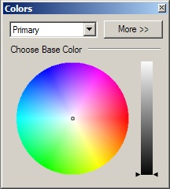
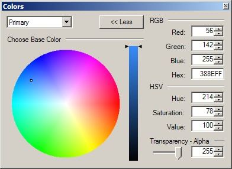

Colors Window
This window has two modes of operation: "Less" and "More". By default, Paint.NET starts up with the Colors Window in Less mode. In this mode you may easily select a base color and then adjust its brightness (or "value," in HSV parlance) using the gradient slider. Paint.NET allows you to have two colors selected, a primary color and a secondary color, and you may use the drop-down box at the top of the Colors Window to choose which one the Colors Window is currently displaying or configuring. Some tools, such as the Paintbrush Tool and the various Shape Tools, allow you to draw using either the primary color or the secondary color depending on which mouse button you use while drawing.

If you click the "More >>" button, the window will expand to present more detailed and fine-grained information. In this mode, you may specify the exact value of each of the color's components in either the RGB (Red, Green, Blue) or HSV (Hue, Saturation, Value) color space. Editing the color in hex, or hexadecimal, mode is also possible. The alpha, or transparency level, may also be configured.

Copyright © 2006 Rick Brewster,
Chris Crosetto, Dennis Dietrich, Tom
Jackson, Michael Kelsey, Brandon Ortiz, Craig Taylor, Chris Trevino, and Luke Walker. Portions Copyright
© 2006 Microsoft Corporation. All Rights Reserved.